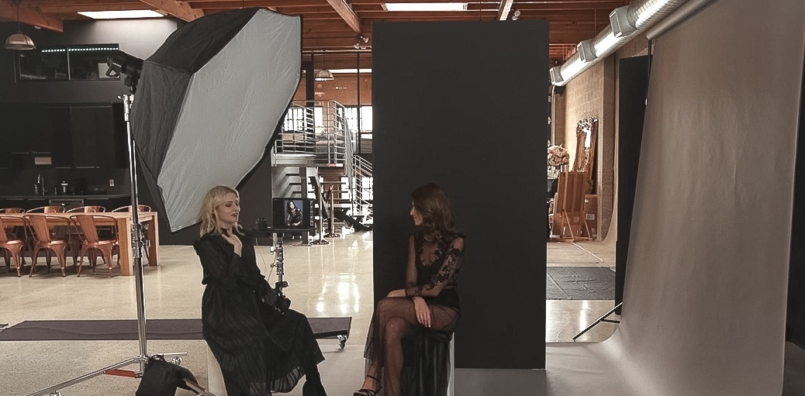

摄影布光的一些方法
本文将阐述一些关于摄影布光的简单技巧，其中一些手法与技巧甚至在家中就可以实现。
最近看了一些lara的摄影布光教学，在这里做一个整理。
封面式布光

需要注意的是，这里需要讲柔光箱的位置稍低一些，这样可以保证下巴的阴影不会太暗，而lara在这里用的吸光板，本质上是为了吸收旁边的光线，让该暗的地方更暗一些。
加上雷达罩
这个和之前的那个没有太大的差别，唯一的差别就是在柔光罩前加上了雷达罩栅格。从效果上来说，雷达罩栅格的目的就是将脸部集中提亮一些，其余部分暗一些。
高调布光
这个布光方式需要注意两点：
- 人物尽可能离柔光屏远一些，差不多0.5-1m，这样边缘不回过曝。
- 在拍摄时，应该首先注意整体的曝光，然后再考虑补光，如下图。

在补光过程中，可以使用一个裸灯直接照亮反光板即可。
蚌壳光
这是一种相对常见的打光方法，在模特下方可以使用白色反光板，也可以是使用银色反光板。
模拟窗户光
这边只要可以均匀的照亮反光板，即可。类似ZARA的衣服都会使用类似的方法。
伦勃朗
常见的伦布拉光，注意控制阴影就可以。
舞台光
个人觉得这是一个特别dramatic的光线，就像舞台一样。当然通过控制灯光、人物、反光的一些角度，还可以做出更多的变化。
但是这里需要控制模特的面部角度，因为一不小心，就会导致面部过亮的情况。
1 | 淘宝链接：https://item.taobao.com/item.htm?spm=a230r.1.14.21.7da51978jcrCBP&id=583226693345&ns=1&abbucket=12#detail |